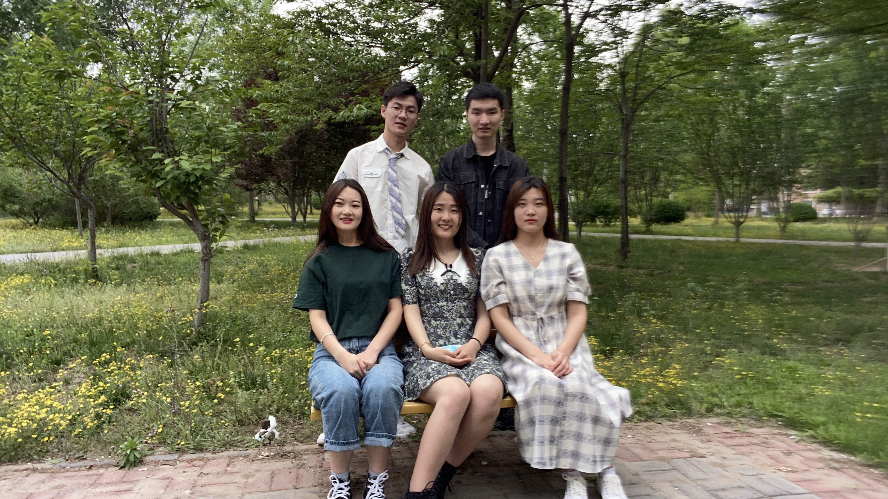
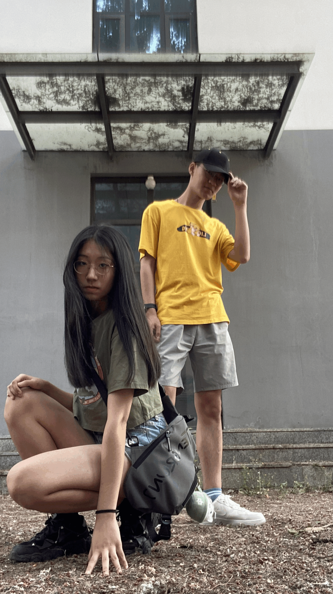
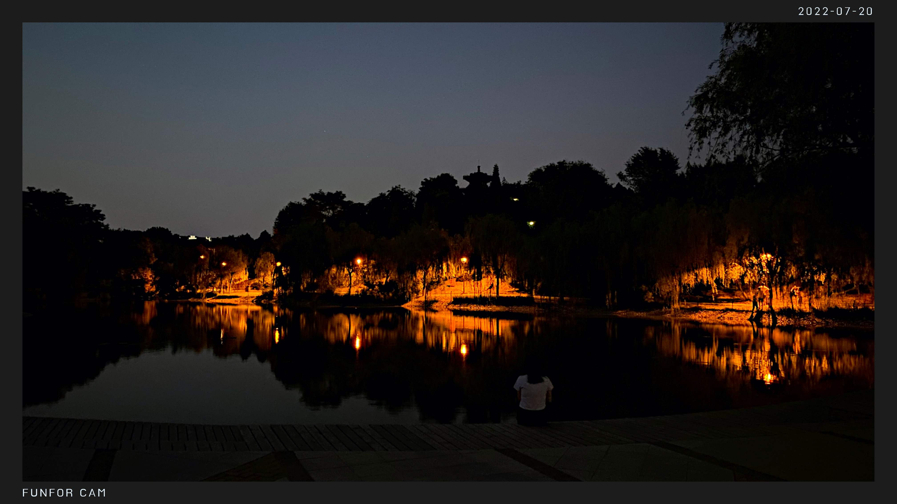
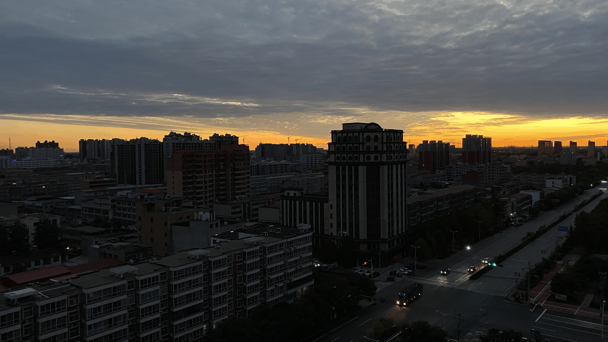

距离2022年结束还有两天，回想这一年，真的是发生了太多的事情，今年真的可以用“魔幻”和“仓促”这两个词来形容。
这一年所发生的所有的高兴和不开心真的也只有自己能够体会，很幸运我今年活下来了。为什么这么说呢，上个月的这个时候，疫情还十分严重，身边的朋友一个接一个地被拉到隔离的地方，谁能够想到一个月之后全国久彻底放开了。本来这是一件值得开心的事情，可随之而来的就是变异的病种，病毒肆意传播，很快，周围基本所有人都中招了。发烧、浑身无力、咳嗽不止…
这真的不是一个小感冒，每天都可以从网上看到，小孩老人因此而去世了，有朋友告诉我她由阳转阴之后，偶然去医院做了个肺部检查，发现有阴影，还好早早发现治疗了，不然后果真的不敢想。
上半年的时候，那时候疫情还不是很严重，我回到了学校，等待考研结果和国家线看看是否有机会，很不幸，我的分数没有到达目标院校的复试线，因此，考研宣告失败，我花了几天去收拾自己的心情，赶紧准备进行下一阶段，是选择二战还是选择就业。
生活又给了我一记耳光，廊坊的疫情突然加重，我们学校周围出现了病例，学校要求所有学生宿舍学习，这也意味着我没有办法出去实习，之前的计划再次被打乱，我只好也只能在宿舍学习。也是在这个时候，我做好了二战的打算。
因为马上要面临毕业，所以这几个月的时间我也要花费很多时间在自己的毕业设计和论文上面，花费了两个月左右的时间，终于完成了毕业设计，基于Java的旅游网站的开发，然后着手完善论文，时间一天又一天的过去，很快时间来到了5月份，论文做了最后的完善和差重，开始了答辩。
答辩很顺利地通过了，这个时候疫情已经减轻了，我们也被允许可以自由出入宿舍，终于可以自由活动了。
不过时间真的过的很快，所有跟毕业相关的事情已经基本处理完毕，大家都已经准备要离开学校了，我也一样，在和一些朋友做了最后的告别之后，离开了学校，来到学校外的一所出租屋里。这是之前和一个也准备二战的朋友商量好，要一起准备二战的。


6月开始了二战复习，每天基本都在有条不紊地复习着，数学题、专业课，做的是真的头疼～ 不过这其中也有很多有意思的事情，我们几个人自己学炒菜做饭哈哈哈，还好我有一个家里开烧烤店的同学，他做的饭很奈斯，我也跟着他学了很多。
我们是三个人合租，其中一个是和我一起准备二战的，另外一个是已经毕业很多年的老学长了，他也在附近工作，大哥人很好，帮了我们很多，他很快就要和他的对象结婚了，哈哈哈，希望能早点去他那吃席。
这几个还发生了一件让人哭笑不得的事情，我们被误认为偷车贼，被拉到派出所喝茶了，真的是一件很难忘的经历了，不过好在警察叔叔人都很友善，在我们解释清楚之后就放我们离开了。不过有一说一，他们也挺辛苦的，记得那天晚上我们是凌晨离开的，他们还需要把事情的完整经过处理完毕才能下班回家。
后来去了一趟洛阳，这是之前就和一个朋友约定好了的，可以看（古都洛阳）这篇文章。


7月、8月每天除了数学题、专业课还是数学题和专业课，8月中旬的时候去了一趟北京，见了几个朋友，可以看（好久不见）这篇文章。
9月因为一些事情，不得不提前结束出租屋里的学习，我回到了家里，然后开始了在家里的学习。

10月参加了表哥的婚礼，看着他们举行婚礼的样子，说实话有些羡慕，哈哈哈不知道什么时候自己才能遇到适合自己的。
10月中，我来到了家附近的自习室学习，好巧不巧的是有两个认识的小学同学也在这里学习，原来他家也在我们小区，没想到过了这么些年才知道，这也是一种缘分吧。
在自习室的每天都很开心，早上早早的来，晚上晚晚的回去，而且这里也认识了新的朋友，学习之余也有一些小欢喜。
终于考试那天还是来了，庆幸自己在考之前阳过一回，不然真不知道自己怎么坚持考完。
距离考试还有一周的时候，我开始发烧，浑身无力酸痛，这个时候真的很无力，很担心这会影响到考试，那几天一点书都没看，甚至连起床的力气都没有，我清楚地记得，发烧的第一天在床上躺了一天，这一天只吃了一个鸡蛋，上了两个厕所，真的是很难受。
幸运的是第三天就退烧了，然后马上开始继续复习功课，背诵记忆英语和政治。
12月23日，来到了考试的地方，好在运气好一些，订到了房间，有一说一，那个房间真的是emmm难以想象，第一天晚上我翻过来覆过去的，不知道是床不舒服还是紧张，几乎整夜没睡，只有一丝印象大概是凌晨四点左右才睡了一会，很快6:30的闹钟响了，我急忙起床洗漱，最后看了一眼政治，出去吃了点东西进考场了。
我们这里被划分为阴阳考场，运气比较好，考前阴了，被分到了阴考场。据一个在阳考场的朋友说，他们考场的老师穿着防护服监场，啊这，我不知道用什么词来吐槽了已经，真的，我们这些参加考试的孩子太不容易了。
进了教室之后，才发现，30个位置空了十几个，到最后专业课考完的时候，总共就16个人坚持考完了。 我记得很清楚，从第一场到最后一场，咳嗽基本没有停过，第一场的时候，旁边有个小姑娘也是一直在咳，可能是她太难受了，考完政治之后就没有来了，害，希望她身体没什么事。
考完数学之后，又走了几个人，今年数学真的挺难的，不过，坚持下来的大家都是好样的！
考完之后，我翻看网上的新闻帖子，发现有太多类似的情况了，好多好多人都是顶着烧去考试的，害，已经不知道怎么去形容了，考完之后我自己的心情也有些低落。一直在想，这半年多到底学了个啥，感觉考的什么也不是。
政治一般，英语感觉还行，数学感觉很不好，专业课也一般般。考前复习的那么多很多都没有考到，也只能是自己的疏忽，还是复习的不够全面。
考完回来之后，就开始有些焦虑了，一个是因为今年能上岸的几率不太大，另一个是不知道接下来要干什么了。也和一些朋友商量过，看看他们有什么想法，可大家都开始焦虑了，我实在是不愿意继续这样下去，时间太宝贵了。
昨天晚上，我又了解到一个信息，就真的有些受到打击了。原来已经毕业的人是无法找实习的，实习只面对在校生。本来二战之前打算考哇之后找个实习积累一下项目经验，可是，现在这个是不行的，只能通过社招去找工作了。
然后现在有几个问题：
- 第一 是直接进行社招找工作还是等待考研结果？
- 第二 出成绩之前这段时间要做些什么？
昨天晚上和几个朋友商量了一下，得出了这样的结论：
- 年后通过社招找工作，顺带等待成绩，如果能找到工作，先去工作。然后成绩下来之后如果可以进入复试，这期间再准备复试，是否能够通过复试。如果成绩不理想，那么继续工作就业。
- 年前这段时间，尽可能的回忆以前的知识技能，重新学习新的技能，做几个项目，丰富一下简历。
加油吧！这几天又把git操作重新回忆了一下，熟悉了一下基本操作，可以开始搞了，加油加油！！
不管怎么说，生活还是要靠自己努力的，慢慢去经历，感受这个社会，体验过社会的打压之后才能更好的成长。
加油！！
希望2023年有好消息！！